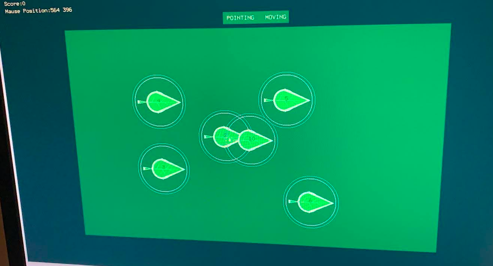
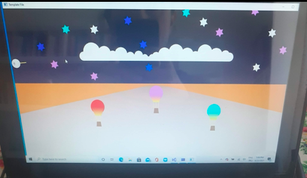

C, OpenGL, Glut library
Shifting users' focus between to details: where the leaves point and how they move. This challenges users' ability to switch between 2 cognitive processes: one interprets shape, the other movement.
C, OpenGL, Glut library
Simulating light reflections on a surface using math properties in Glut Library (C).
C, OpenGL, Glut library
Implementing a “hitting the targets” game using trigonometry.
Java, NetBeans 12.5 GUI
The program checks user id and password and then allows users to transfer money, open deposit accounts.
JavaScript(ES6), JQuery, HTML5 CSS3
Click on all the tiles before the time runs out! Heavy use of JQuery Library.